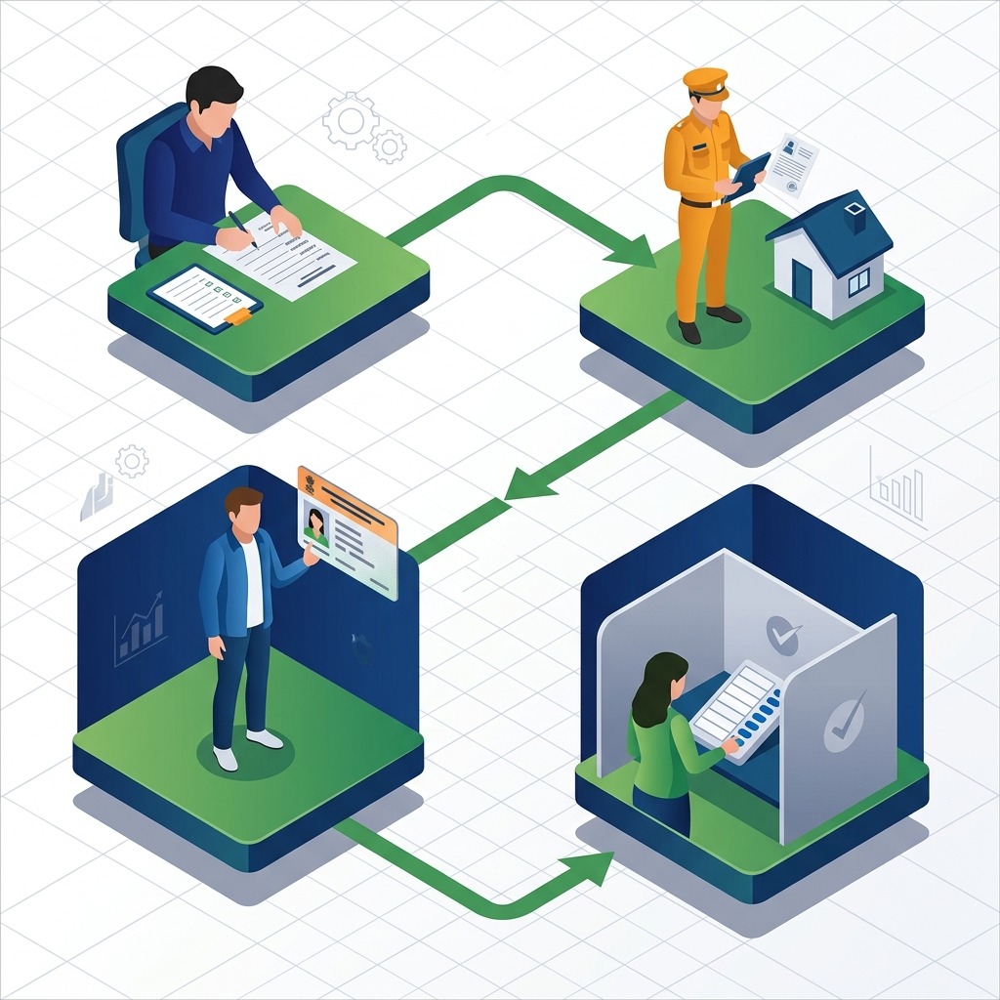

Welcome! Let's get you ready to vote.
The Election Timeline

1. Registration Cutoff: You must apply before nominations begin.
2. BLO Verification: A local officer verifies your address.
3. Final Roll: Your name is added to the official voter list.
4. Polling Day: You receive your slip and cast your vote!
Step 1: Check Eligibility
Are you 18 years or older?
Step 2: Voter ID & Electoral Roll
Do you have a Voter ID Card (EPIC)?
Step 3: Inside the Polling Booth
Let's practice! This is what the EVM (Electronic Voting Machine) looks like. Press the blue button next to your chosen candidate.
🧠 Complete Education Hub
1. Verification: Show your Voter ID/Slip to the Polling Officer.
2. Inking: The Second Officer marks your left forefinger with indelible ink.
3. Signature: You sign the register.
4. Voting: Proceed to the EVM compartment, press the blue button next to your candidate, and listen for the BEEP. Check the VVPAT slip through the glass window!
✅ DO: Carry an original valid ID card (Voter ID, Aadhaar, PAN).
✅ DO: Check your name on the voter list beforehand.
❌ DON'T: Bring mobile phones, cameras, or smartwatches inside the voting compartment.
❌ DON'T: Wear clothing with political party symbols.
Are EVMs Safe? Yes! EVMs are standalone machines, like calculators. They are not connected to the internet, Wi-Fi, or Bluetooth, making them impossible to hack remotely.
Is it safe to vote? Yes! Central Armed Police Forces (CRPF) are deployed at sensitive booths to prevent any intimidation. Your vote is 100% secret.
Don't panic! As long as your name is on the Electoral Roll, you can still vote. You can show any of these alternative documents to the polling officer:
- Aadhaar Card
- PAN Card
- Driving License
- Indian Passport
- MNREGA Job Card
If you need a new physical Voter ID card, simply fill out Form 8 for a replacement.
Every single vote counts. By voting, you choose the leaders who make decisions about your roads, schools, hospitals, and taxes. Not voting means letting others make these crucial decisions for you!
🏆 Test Your Knowledge
Question 1: Can you wear a political party t-shirt inside the polling booth?